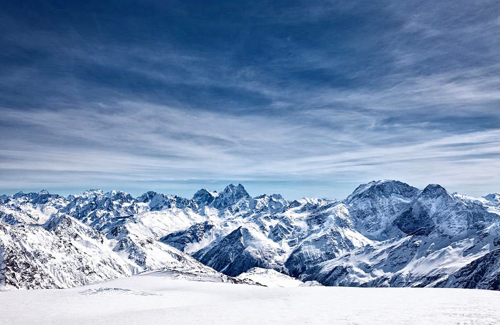

ADVENTURE
Adventure Time!!
Adventure time is the perfect expression of freedom, curiosity, and discovery. It represents those moments when we step out of our comfort zones and embrace the unknown with excitement and courage. Adventure is not limited to climbing mountains or exploring distant lands—it can be found in every experience that challenges us, teaches us, and brings us closer to the beauty of life. Whether it’s trekking through dense forests, sailing across vast oceans, exploring ancient ruins, or even trying something completely new for the first time, adventure fills our hearts with energy and wonder.
Every adventure tells a story. It tests our strength, patience, and determination while reminding us of our connection with nature and the world around us. The thrill of standing on a mountain peak, the calm of a quiet river, or the rush of discovering a hidden trail—all these experiences awaken a deeper sense of gratitude and joy. Adventure teaches us that life is not just about reaching a destination, but about enjoying the journey itself.
Adventure time also brings people together. Shared experiences create lasting bonds and unforgettable memories. It helps us appreciate diversity, cultures, and perspectives that broaden our understanding of life. Moreover, adventures often push us to overcome fear and self-doubt, revealing our hidden potential and inner strength.
In a world filled with routines and responsibilities, adventure time reminds us to pause, breathe, and live in the moment. It invites us to be spontaneous, brave, and curious. Every adventure, big or small, changes us in some way—it makes us wiser, happier, and more alive. So, whether it’s a weekend hike, a road trip, or a daring expedition, adventure time is the call to live life to its fullest and make every moment count.
Whether it’s hiking through forests, climbing mountains, diving into oceans, or simply trying something new, adventure teaches courage and resilience. It awakens a sense of wonder and freedom, reminding us that life is meant to be lived fully. Adventure time encourages curiosity and fuels creativity, helping us grow stronger and more confident. Each adventure tells a story—one that inspires others to seek their own paths and embrace the beauty of exploration and discovery.
BIKING
Biking is more than just a mode of transport—it’s a lifestyle, a passion, and a source of freedom. The simple act of pedaling connects people to the world around them in a unique and powerful way. Whether you’re riding through busy city streets, winding mountain trails, or peaceful countryside roads, biking offers a sense of adventure and liberation that few activities can match. It allows riders to feel the wind, hear the rhythm of the tires, and experience every turn with excitement and focus.
Beyond its thrill, biking is one of the healthiest forms of exercise. It strengthens muscles, improves heart health, boosts stamina, and helps maintain overall fitness. Regular cycling can reduce stress, sharpen the mind, and increase happiness through the release of endorphins. It’s also an eco-friendly way to travel—reducing carbon emissions and promoting a cleaner, greener planet. In a time when sustainability is crucial, biking stands as a powerful reminder of how small changes can make a big impact on the environment.
Biking also builds community and connection. Group rides, cycling clubs, and bike rallies bring together people from different backgrounds who share the same passion. Riders motivate and support each other, fostering teamwork and friendship. It encourages a spirit of exploration—discovering new routes, testing endurance, and pushing personal limits.
For many, biking is not just a sport but a way of life. It teaches discipline, patience, and perseverance while offering joy in every ride. Whether it’s a casual weekend trip or a challenging long-distance journey, biking gives a sense of achievement and peace. Each ride is an opportunity to discover new places, clear the mind, and embrace the beauty of movement. Simply put, biking is freedom on two wheels.
Biking also builds community and connection. Group rides, cycling clubs, and bike rallies bring together people from different backgrounds who share the same passion. Riders motivate and support each other, fostering teamwork and friendship. It encourages a spirit of exploration—discovering new routes, testing endurance, and pushing personal limits.
PARA GLIDING
Paragliding is one of the most exhilarating adventure sports, offering the rare chance to soar freely through the sky like a bird. It combines the thrill of flight with the beauty of nature, creating an unforgettable experience for those who dare to take the leap. With just a fabric wing, a harness, and the power of the wind, paragliding allows you to glide gracefully above mountains, valleys, and lakes, feeling both peace and excitement at the same time. Every flight offers breathtaking views and a sense of liberation that words can hardly describe.
The sport requires skill, balance, and trust in the wind. Before takeoff, pilots carefully prepare—checking equipment, studying weather conditions, and planning their route. Once in the air, they rely on thermal currents and gentle controls to navigate smoothly. It’s a perfect mix of adventure and mindfulness, as every small movement counts and every moment in the sky demands focus.
Paragliding also teaches courage and confidence. The first jump often brings a rush of adrenaline and fear, but as you rise into the air, that fear transforms into pure joy and wonder. It reminds us how small we are compared to the vastness of nature, yet how capable we are when we trust ourselves.
Besides being thrilling, paragliding connects people deeply with the environment. Floating above untouched landscapes inspires a sense of respect and appreciation for nature’s beauty. It’s also a growing community sport, where enthusiasts share experiences, techniques, and flight stories from around the world.
In the end, paragliding is not just about flying—it’s about freedom, courage, and self-discovery. Each flight is a journey into the skies and into one’s own spirit. It’s the perfect adventure for those who wish to break boundaries, embrace the wind, and truly feel alive.
Paragliding also teaches courage and confidence. The first jump often brings a rush of adrenaline and fear, but as you rise into the air, that fear transforms into pure joy and wonder. It reminds us how small we are compared to the vastness of nature, yet how capable we are when we trust ourselves.
SURFING
Surfing is one of the most thrilling and liberating water sports in the world. It’s not just about riding waves—it’s about connecting with the ocean, feeling its rhythm, and finding harmony between balance and motion. Surfers often describe the experience as both exciting and peaceful, a perfect blend of adrenaline and serenity. Each wave tells a story, and every ride becomes a dance between the surfer and the sea.
Learning to surf requires patience, skill, and respect for nature. From paddling into position to catching the perfect wave, every step demands focus and determination. The early attempts may end in wipeouts, but with practice, the sense of accomplishment that comes from standing on the board and gliding over the water is unmatched. It teaches persistence, timing, and awareness—skills that extend far beyond the sport itself.
Surfing is also a way to connect with the natural world. The ocean becomes a playground and a teacher, reminding us of the power and beauty of nature. Watching the sunrise or sunset from the surf line creates moments of pure peace and gratitude. It encourages mindfulness, as every wave is unique and demands presence in the moment.
Beyond the individual experience, surfing has built a global community of passionate people. From the beaches of Hawaii and California to Australia and India, surfers share a bond of adventure, respect, and joy. Competitions, festivals, and local surf schools keep the spirit of the sport alive across generations.
Ultimately, surfing is more than a sport—it’s a lifestyle. It inspires freedom, strength, and a deep love for the ocean. Every time a surfer paddles out, they leave behind the noise of the world and embrace the simplicity of wind, water, and motion. Surfing is a reminder that the best moments in life are often found in the waves.
Surfing is also a way to connect with the natural world. The ocean becomes a playground and a teacher, reminding us of the power and beauty of nature. Watching the sunrise or sunset from the surf line creates moments of pure peace and gratitude. It encourages mindfulness, as every wave is unique and demands presence in the moment.